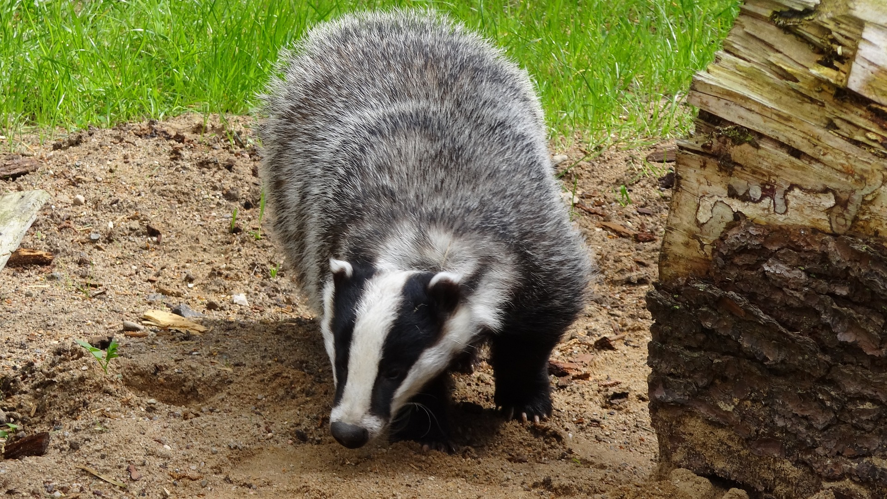

Odżywianie się borsuków
- Borsuki są wszystkożerne.
- Ich dieta składa się głównie z owadów, drobnych ssaków, jaj ptaków, jaj żółwi i różnych roślin.
- Posiadają silne żuchwy, które pozwalają im łamać skorupki jaj i żuć twarde nasiona.
- Borsuki potrafią znaleźć pokarm również w glebie, kopiąc nory.
